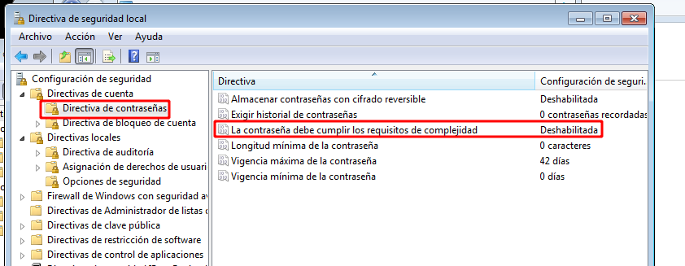

Directivas de seguridad local
Las directivas de seguridad local nos permiten administrar la forma en que se gestiona la seguridad en el equipo. Podemos acceder a la ventana de administración escribiendo "directivas" en la busqueda de Windows.
Existen miles de directivas de seguridad que pueden ser configuradas, y cada una de ellas permitirá configurar algún parámetro del entorno de trabajo del equipo y de sus usuarios. A continuación se muestran algunas que pueden ser utiles para establecer la configuración de los usuarios.
